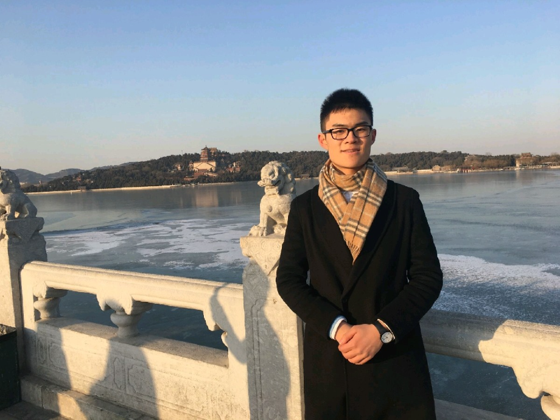

Boyuan Liang
Robots as extensions of humans
I am a Ph.D. candidate in the Mechanical System Control Lab at the University of California, Berkeley, advised by Prof Masayoshi Tomizuka (Member of the National Academy of Engineering). Prior to that, I obtained B.Sc. in Applied Mathematics from National University of Singapore, where I worked Prof Hui Ji and Prof Qianxiao Li. Before joining UC Berkeley, I also worked as a research engineer in Agency of Science, Technology and Research, supervised by Dr. Yan Wu.
My research interest lies in seamless teleoperation. Specifically, I care how human motions can be reliably forwarded to robots, and how robot sensings can be feedback to the human operator. My ultimate dream is to build a Gundam-like teleoperation system, where the robot almost becomes a part of the operator's body and extends his capability.
Outside research, I enjoy playing badminton and Arknights. Feel free to reach out for collaboration, or badminton, or Arknights events, or just chatting.